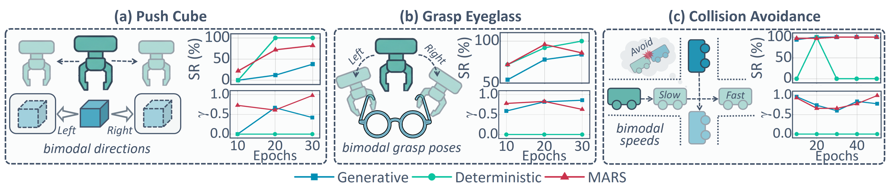

§ 01 — Idea
Inject noise only when the task demands it.
MARS turns stochasticity from a fixed burden into an adaptive resource.
vs. flow-matching baselines at inference
average gain on real-world manipulation tasks
8 simulated · 4 real-world · Franka & Galaxea R1 Lite
§ 02 — Tension
Flow-matching and diffusion policies model behaviour as a stochastic process. They capture multi-modal action distributions, but every inference call pays for stochastic noise initialisation and an iterative denoising loop.
Action-to-action regressors are an order of magnitude cheaper, yet they collapse to the mean whenever the demonstration data covers several equally valid behaviours, silently degrading rollout quality.
§ 03 — Insight

MARS predicts a per-dimension multimodality weight and injects stochastic noise only on the dimensions and timesteps where the demonstrations exhibit genuine behavioural diversity. Elsewhere the policy degrades gracefully into a fast deterministic regressor — recovering the speed of A2A without the mode collapse.
§ 04 — Method
A small modal scheduling network reads the recent action history and predicts where multimodality is needed. Its output then governs both the source distribution of the flow and the number of denoising steps at inference.

A lightweight head predicts from the recent action context — one weight per action dimension. High where demonstrations branch; near zero where they don't.
Instead of pure Gaussian noise, the flow starts from a hybrid:
Training jointly minimises flow-matching, reconstruction and a diversity term matching source spread to target spread. At inference the ODE budget scales with ‖w‖∞:
§ 05 — Real-World
On Franka and Galaxea R1 Lite we compare MARS against a flow-matching baseline (FM) and a deterministic action-to-action regressor (A2A). Every video below plays at 2× — hover for full controls or scrub to inspect frame-by-frame.
Two equally valid grasp poses: handle or rim. The dataset contains both at roughly 50/50 — only a policy that preserves multimodality reaches each pose successfully.
Reaches both grasp poses across rollouts.
Diverse but slow; latency dominated by denoising loop.
Averages both modes into an in-between grasp that misses the cup.
Reach, grasp, and lift across cluttered produce. The held-out test includes daikon, carrot, and lemon at varied orientations — a stress test for modal balance under data scarcity.
Holds modal balance even under over-training and data scarcity.
Drifts to one mode as training proceeds; long inference path.
Collapses to a single grasp pose; misses oriented or occluded vegetables.

§ 06 — Benchmarks
We separate simulated tasks by whether the demonstrations exhibit genuine multimodality (left below) or are essentially unimodal (right). MARS wins both — and on unimodal tasks it actually trains faster than the deterministic baseline by modelling residual action diversity that strict regression discards.


§ 07 — Robustness
Five qualitative and quantitative ablations, ordered by argument: first the failure surface of every baseline on 2D nav, then the two modes of failure (architectural and training), then the robustness story.


§ 08 — Cite
@inproceedings{mars2026,
title = {{MARS} Policy: Multimodality Only When It Matters},
author = {Jia, Jindou and Li, Gen and Chen, Xiangyu and An, Tuo and
Hu, Yuxuan and Li, Jingliang and Guo, Xinying and Yang, Jianfei},
booktitle = {Preprint},
year = {2026}
}